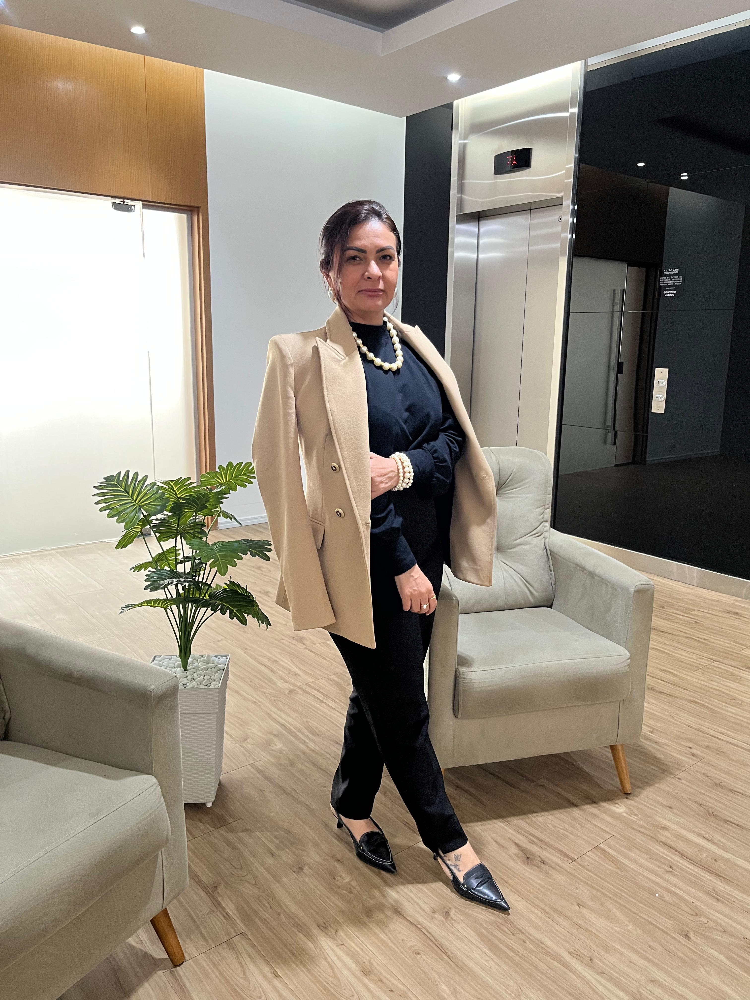
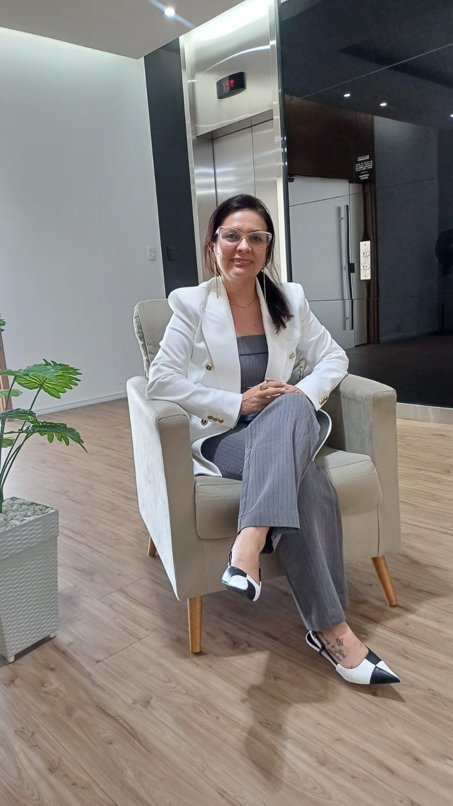

Colaboradores desmotivados e baixa energia nas entregas.
Psicologia organizacional
Ambientes de trabalho mais saudáveis, equipes mais produtivas.
Não é só sobre cumprir norma. É sobre cuidar de pessoas.

Ana Paula Teixeira
CRP 06/183654 · Psicóloga Organizacional
Diagnóstico empresarial
Sua empresa reconhece esses sinais?
Antes de virar crise, a saúde mental corporativa se manifesta em indicadores silenciosos: clima instável, falhas de comunicação, retrabalho e decisões de contratação que custam caro.
Ignorar isso pode gerar:
- queda de produtividade
- aumento de custos
- passivos trabalhistas
- multas NR-1
Afastamentos frequentes e sinais de adoecimento emocional.
Conflitos internos que desgastam líderes e equipes.
Dificuldade para lidar com exigências da NR-1.
Contratações erradas que aumentam turnover e custo operacional.
Você não está sozinho. A saúde mental no trabalho agora é obrigação estratégica e legal.
Resultados práticos
Psicologia aplicada à gestão, à prevenção e à performance.
Menos afastamentos
Mapeamento de riscos e ações preventivas para reduzir adoecimento e interrupções.
Clima saudável
Ambientes com mais escuta, segurança psicológica e relações de trabalho maduras.
Produtividade elevada
Equipes com mais clareza, foco e disponibilidade emocional para executar melhor.
Adequação NR-1
Diagnóstico, relatórios e plano de ação para riscos psicossociais.
Segurança jurídica
Documentação técnica e condução ética para apoiar decisões organizacionais.
Contratações assertivas
Processos seletivos com avaliação psicológica, perfil comportamental e critérios claros.
Soluções
Serviços desenhados para empresas que levam pessoas a sério.
Atuação consultiva, técnica e humana para reduzir riscos, elevar maturidade organizacional e proteger o negócio.
01
NR-1
Avaliação de Riscos Psicossociais
- Diagnóstico de riscos psicossociais
- Relatórios técnicos para gestão
- Plano de ação preventivo e corretivo
02
90 dias
Recrutamento e Seleção
- Testes psicológicos
- Análise comportamental
- Verificação de antecedentes
- Relatório completo para decisão
Garantia de 90 dias com reposição gratuita.
03
Cuidado
Saúde Mental no Trabalho
- Plantão psicológico corporativo
- Terapia individual
- Terapia em grupo
- Dinâmicas para equipes
04
Cultura
Desenvolvimento Organizacional
- Palestras corporativas
- Programas de bem-estar
- Cultura organizacional

Quem faz
Ana Paula Teixeira
Psicóloga Organizacional
CRP 06/183654Ana Paula Teixeira atua com empresas que precisam reduzir riscos psicossociais, proteger equipes e transformar saúde mental em uma prática real de gestão.
Seu trabalho une psicologia e gestão para construir decisões mais humanas, processos seletivos mais assertivos e ambientes corporativos mais saudáveis, produtivos e seguros.
Meu compromisso é transformar ambientes de trabalho em espaços mais saudáveis, produtivos e seguros.
Prova social
Indicadores que justificam a decisão antes da crise.
“
Depois das ações, percebemos uma equipe muito mais engajada e produtiva.
RH
Marina CostaGerente de RH
“
O processo seletivo ficou muito mais assertivo. O turnover caiu.
DP
Renato AlvesDiretor de Pessoas
“
Conseguimos nos adequar à NR-1 com total segurança jurídica.
CO
Carla MendesCOO
Próximo passo
Não espere o problema aparecer. Aja agora.
Uma conversa técnica pode revelar riscos, oportunidades e caminhos concretos para proteger sua empresa e sua equipe.
WhatsApp (11) 96835-7776
ana@consultoriapsicoerh.com.br
@ana.psicologaorganizacional
Av. Paulista 777 Bela Vista SP